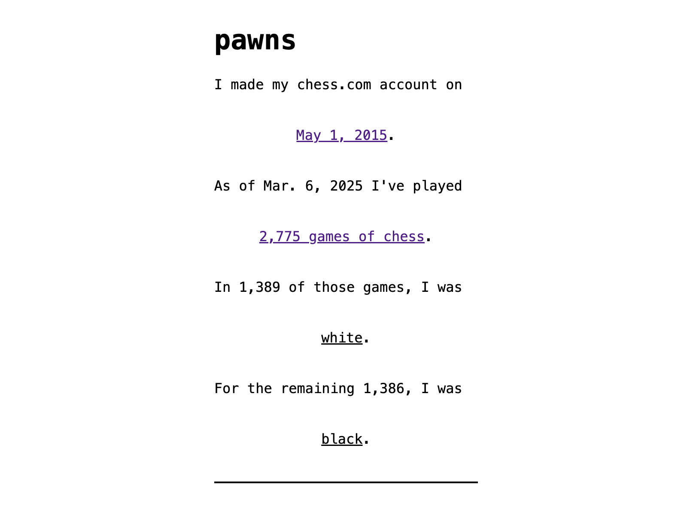

♟️ s2a2
In this project, we built a single-page site using CSS selectors and media queries to create experiences tailored to different user environments, all under 1MB. I discovered the power of :has as I revisited my chess openings.
